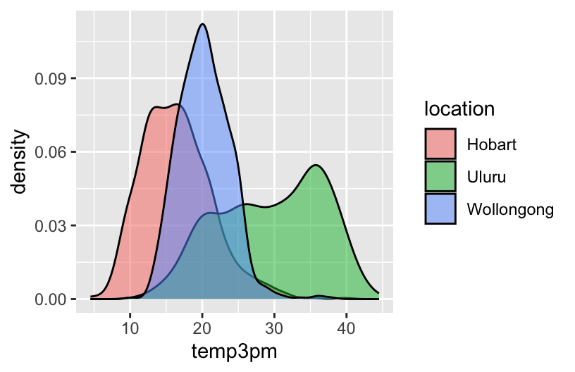

13 Bivariate Viz
13.1 Review
Let’s review some univariate concepts and code using our class survey data. If the answers aren’t at the top of your mind, don’t fret! We’ve barely started speaking this new language, and learned a ton of vocab last week, so you naturally won’t remember it all.
EXAMPLE 1: Hangout Preferences
Students were asked, in that moment, where they’d most like to spend time outside. How did they answer? Was there a lot of agreement or a lot of variability in answers? Build and interpret a plot that helps address these questions while reviewing:
- “code as communication”
- connecting with the components of a plot:
- set up a frame
- add a layer / geometric element
- change the theme, e.g. axis labels, color, fill
EXAMPLE 2: Temperature Preferences
Students were asked about their ideal outdoor temperature, in degrees Celsius. How did they answer? What was the typical response? What was the range in responses? Were there any outliers? Build and interpret 2 plots that help address these questions.
Bar charts & histograms can appear pretty similar, but they do different things.
- Bar charts count up the number of observations of each outcome of a variable. They’re good for categorical variables, or quantitative variables with only a handful of possible outcomes.
- Histograms count up the number of observations that fall into different numerical ranges of variable. They’re good for quantitative variables, especially those with many different observed outcomes.
13.2 New stuff
Thus far, we’ve been studying one variable at a time, using univariate plots. But once we get a sense of how individual variables behave on their own, our questions often turn to relationships among variables. For example, in our hikes data:
- How much
timedoes it take to complete a hike? ——> How istimerelated to a hike’selevation? What about itslength? - How does difficult
ratingvary from hike to hike? ——-> How is difficultyratingrelated to a hike’sascent?
13.2.1 Exploring relationships
Exploring univariate patterns often sparks follow-up questions about relationships between 2+ variables. Often, but not always, variables take on specific roles:
-
response variable: the variable whose variability we would like to explain (
timeto complete a hike) -
predictors: variables that might explain some of the variability in the response (a hike’s
elevationorlength)
Visualizations can help explore:
- relationship trends (direction and form)
- relationship strength (degree of variability from the trend)
- outliers in the relationship
EXAMPLE 3
For each pair of variables below, sketch on paper a visualization of their relationship. Focus on general viz process, don’t worry about the exact details. The data here are totally made up.
- 3pm temperature (response) vs 9am temperature (predictor)
temp_3pm temp_9am
1 24 14
2 26 18
3 20 15
4 15 13
5 15 11
6 15 11- 3pm temperature (response) vs location (predictor)
weather <- data.frame(temp_3pm = c(24, 26, 20, 15, 15, 0, 40, 60, 57, 44, 51, 75),
location = rep(c("A", "B"), each = 6))
weather temp_3pm location
1 24 A
2 26 A
3 20 A
4 15 A
5 15 A
6 0 A
7 40 B
8 60 B
9 57 B
10 44 B
11 51 B
12 75 BThink: How might we modify the below density plot of temp_3pm to distinguish between locations?
-
rain_today(the response) andlocation(the predictor)
weather <- data.frame(rain_today = c("no", "no", "no", "no", "yes", "no", "yes", "no", "yes", "yes", "no", "yes"),
location = c(rep("A", 7), rep("B", 5)))
weather rain_today location
1 no A
2 no A
3 no A
4 no A
5 yes A
6 no A
7 yes A
8 no B
9 yes B
10 yes B
11 no B
12 yes BThink: How might we modify the below bar plot of location to distinguish between days on which it did or didn’t rain?

13.2.2 General guidance for building bivariate plots
As with univariate plots, an appropriate visualization for the relationship between 2 variables depends upon whether the variables are quantitative or categorical. In general:
- Each quantitative variable requires a new axis (or a quantitative scale if we run out of axes).
- Each categorical variable requires a new way to “group” the graphic (eg: using colors, shapes, separate facets, etc)
- For visualizations in which overlap in glyphs or plots obscures the patterns, try faceting or transparency.
13.3 Exercises (required)
Github user Tony McGovern has compiled and made available 2020/2016/2012 presidential election results for most of 3000+ U.S. counties, except Alaska. (Image: Wikimedia Commons)

A wrangled version of this data, is imported below, after being combined with:
- 2013 county-level demographics from the
df_county_demographicsdata set from thechoroplethrR package - historical voting trends in the state in which the county falls (from https://www.270towin.com/content/blue-and-red-states):
- red = consistently Republican
- blue = consistently Democratic
- purple = something in between
# Load data
elections <- read.csv("https://mac-stat.github.io/data/election_2020_county.csv")
# Check it out
head(elections) state_name state_abbr historical county_name county_fips total_votes_20
1 Alabama AL red Autauga County 1001 27770
2 Alabama AL red Baldwin County 1003 109679
3 Alabama AL red Barbour County 1005 10518
4 Alabama AL red Bibb County 1007 9595
5 Alabama AL red Blount County 1009 27588
6 Alabama AL red Bullock County 1011 4613
repub_pct_20 dem_pct_20 winner_20 total_votes_16 repub_pct_16 dem_pct_16
1 71.44 27.02 repub 24661 73.44 23.96
2 76.17 22.41 repub 94090 77.35 19.57
3 53.45 45.79 repub 10390 52.27 46.66
4 78.43 20.70 repub 8748 76.97 21.42
5 89.57 9.57 repub 25384 89.85 8.47
6 24.84 74.70 dem 4701 24.23 75.09
winner_16 total_votes_12 repub_pct_12 dem_pct_12 winner_12 total_population
1 repub 23909 72.63 26.58 repub 54907
2 repub 84988 77.39 21.57 repub 187114
3 repub 11459 48.34 51.25 dem 27321
4 repub 8391 73.07 26.22 repub 22754
5 repub 23980 86.49 12.35 repub 57623
6 dem 5318 23.51 76.31 dem 10746
percent_white percent_black percent_asian percent_hispanic per_capita_income
1 76 18 1 2 24571
2 83 9 1 4 26766
3 46 46 0 5 16829
4 75 22 0 2 17427
5 88 1 0 8 20730
6 22 71 0 6 18628
median_rent median_age
1 668 37.5
2 693 41.5
3 382 38.3
4 351 39.4
5 403 39.6
6 276 39.6We’ll use this data to explore voting outcomes within the U.S.’s 2-party system. Here’s a list of candidates by year:
| year | Republican candidate | Democratic candidate |
|---|---|---|
| 2020 | Donald Trump | Joe Biden |
| 2016 | Donald Trump | Hillary Clinton |
| 2012 | Mitt Romney | Barack Obama |
13.3.1 Exercise 0: Review
13.3.1.1 Part a
How many, or roughly what percent, of the 3000+ counties did the Republican candidate win in 2020?
- Take a guess.
- Then make a plot of the
winnervariable. - Then discuss what follow-up questions you might have (and that our data might help us answer).
13.3.1.2 Part b
The repub_pct_20 variable provides more detail about the Republican support in each county. Construct a plot of repub_pct_20.
Notice that the distribution of Republican support from county to county is slightly left skewed or negatively skewed.
What follow-up questions do you have?

13.3.2 Exercise 1: Quantitative vs Quantitative Intuition Check
Don’t spend more than 3 minutes on this!
Below is a scatterplot of the Republican support in 2020 vs 2016. Notice that:
- both variables are quantitative, and get their own axes
- the response variable is on the y-axis, demonstrating how
repub_pct_20might be predicted byrepub_pct_16, not vice versa
Try to replicate this using ggplot(). THINK:
- What info do you need to set up the canvas?
- What geometric layer (
geom_???) might add these dots / points for each county? We haven’t learned this yet, just take some guesses.


13.3.3 Exercise 2: 2 Quantitiative Variables
Run each chunk below to build up a a scatterplot of repub_pct_20 vs repub_pct_16 with different glyphs representing each county. Address or think about any prompts in the comments (#).

13.3.4 Exercise 3: Reflect
Summarize the relationship between the Republican support in 2020 and 2016. Be sure to comment on:
- the strength of the relationship (weak/moderate/strong)
- the direction of the relationship (positive/negative)
- outliers (in what state do counties deviate from the national trend? Any ideas why this might be the case?)
The relationship between the Republican support in 2020 and 2016 is positive strong. Some of the TX desviate from the national trend, this could be becuase the support in 2020 increase higher than the prediction based on 2016.
13.3.5 Exercise 4: Visualizing trend
The trend of the relationship between repub_pct_20 and repub_pct_16 is clearly positive and (mostly) linear. We can highlight this trend by adding a model “smooth” to the plot:
13.3.5.1 Part a
Construct a new plot that contains the model smooth but does not include the individual point glyphs.
13.3.5.2 Part b
By default, geom_smooth() adds a smooth, localized model line. To examine the “best” linear model, we can specify method = "lm". It’s pretty similar in this example!
13.3.6 Exercise 5: Your Turn
To examine how the 2020 results are related to some county demographics, construct scatterplots of repub_pct_20 vs median_rent, and repub_pct_20 vs median_age. Summarize the relationship between these two variables and comment on which is the better predictor of repub_pct_20, median_rent or median_age.
# Scatterplot of repub_pct_20 vs median_rent
ggplot(elections, aes(x = median_rent, y = repub_pct_20)) +
geom_point()
# Scatterplot of repub_pct_20 vs median_age
ggplot(elections, aes(x = median_age, y = repub_pct_20)) +
geom_point()
The relationship between republican pct in 2020 and the median rent is roughly strong and negative, which means that in average, the percentage of republican voting increased when the median rent is lower. The relationship with median age is weak, the data points are spread with a concentration in the middle age, indicating that most republican percentage of voter had around that age but do not show a clear trend. Thus, ‘median_rent’ is a better predictor of ’repub_pct_20`
Exercise 6: A Sad Scatterplot
Next, let’s explore the relationship between a county’s 2020 Republican support repub_pct_20 and the historical political trends in its state. In this case repub_pct_20 is quantitative, but historical is categorical. Explain why a scatterplot might not be an effective visualization for exploring this relationship. (What questions does / doesn’t it help answer?)
A scatterplot is a good visualization when both variables are quantitative. With a categorical variable would be hard if not impossible to clearly see the distribution of the data points and determine patterns among it.

13.3.7 Exercise 7: Quantitative vs Categorical – Violins & Boxes
Though the above scatterplot did group the counties by historical category, it’s nearly impossible to pick out meaningful patterns in 2020 Republican support in each category. Let’s try adding 2 different geom layers to the frame:
Box plots are constructed from five numbers - the minimum, 25th percentile, median, 75th percentile, and maximum value of a quantitative variable:

REFLECT:
Summarize what you’ve learned about the 2020 Republican county-level support within and between red/purple/blue states.
In the 2020, there was a greater support of Republican in historical red states and a lower in blue states.
13.3.8 Exercise 8: Quantitative vs Categorical – Intuition Check
Don’t spend more than 3 minutes on this!
We can also visualize the relationship between repub_pct_20 and historical using our familiar density plots. In the plot below, notice that we simply created a separate density plot for each historical category. (The plot itself is “bad” but we’ll fix it below.) Try to adjust the code chunk below, which starts with a density plot of repub_pct_20 alone, to re-create this image.


Exercise 9: Quantitative vs Categorical – Density Plots
Work through the chunks below and address the comments therein.
Exercise 10
We’ve now learned 3 (of many) ways to visualize the relationship between a quantitative and categorical variable: side-by-side violins, boxplots, and density plots.
- Which do you like best? I like more the boxplot
- What is one pro of density plots relative to boxplots? It’s easier to compare distributions as present all the data.
- What is one con of density plots relative to boxplots? Boxplots are easier to interpret
Exercise 11: Categorical vs Categorical – Intuition Check
Finally, let’s simply explore who won each county in 2020 (winner_20) and how this breaks down by historical voting trends in the state. That is, let’s explore the relationship between 2 categorical variables! Following the same themes as above, we can utilize grouping features such as fill/color or facets to distinguish between different categories of winner_20 and historical.
Spend at most 5 minutes on the following intuition check. Adjust the code below to recreate the following two plots.


13.3.9 Exercise 12: Categorical vs Categorical
Construct the following 4 bar plot visualizations.
13.3.9.1 Part a
Name one pro and one con of using the “proportional bar plot” instead of one of the other three options. - Pro: easier to compare the relative outcome in blue vs purple vs red states - Con: we don’t know how many counties are part of each category.
13.3.9.2 Part b
What’s your favorite bar plot from part and why? - the stacked bar plot because i find it easier to understand in context of the data and identify trends
13.3.10 Exercise 13: Practice (now or later)
Decide what’s best for you:
- Try this extra practice now.
- Reflect on the above exercises and come back to this extra practice later (but before the next class).
Import some daily weather data from a few locations in Australia:
Construct plots that address the research questions in each chunk. You might make multiple plots–there are many ways to do things!. However, don’t just throw spaghetti at the wall.
Reflect before doing anything. What types of variables are these? How might you plot just 1 of the variables, and then tweak the plot to incorporate the other?
# How do 3pm temperatures (temp3pm) differ by location?
ggplot(weather, aes(x = temp3pm, fill = location)) +
geom_density(alpha = 0.5)

13.4 Exercises (optional)
The above visualizations are foundational and important. But they’re not the only way to visualize the variables in our dataset.
Optional Exercise 1: Many Categories
Suppose we wanted to better understand how the 2020 Republican support varied from county to county within each state. Since repub_pct_20 is quantitative and state_abbr is categorical, we could make a density plot of repub_pct_20 for each state. Reflect on why this is bad.
A facet wrap would also be bad!

When we want to compare the distribution of some quantitative outcome among many groups / categories, a ridgeline plot can be a good option. These are also called joy plots, named after the album cover for “Unknown Pleasures” by Joy Division. (Look it up!) To make a ridgeline plot, we can use the geom_density_ridges() function from the ggridges package.
Follow-up questions
- Which states tend to have the most variability in outcomes from county to county? The least?
- What other interesting patterns do you notice?
- Does this plot prompt any other questions?
Optional Exercise 2: Total Outcomes by State
Let’s import some new data and counts up the total votes (Republican and Democratic) by state, not county. This was wrangled from the elections data!
For example, we might make a scatterplot of the 2020 vs 2016 outcomes:

.png){kind=link}
BUT this isn’t the easiest way to communicate or identify the changes from 1 year to the next.
# Check it out
ggplot(elections_by_state, aes(x = repub_pct_20, y = state_abbr)) +
geom_point(color = "red")
# Check it out
ggplot(elections_by_state, aes(x = repub_pct_20, y = fct_reorder(state_abbr, repub_pct_20))) +
geom_point(color = "red")
# Finally, add ANOTHER layer of points for the 2016 outcomes
# What info does this new geom_point() layer need to run?
ggplot(elections_by_state, aes(x = repub_pct_20, y = fct_reorder(state_abbr, repub_pct_20))) +
geom_point(color = "red") +
geom_point(aes(x = repub_pct_16, y = state_abbr))
Reflect on the following
- What do you think this plot needs? Try it! You might need to do some digging online.
- Summarize the main takeaways from the plots. Which states changed the most from 2016 to 2020? The least? Where did the Republican support increase? Where did it decrease?
- What other questions are you left with?